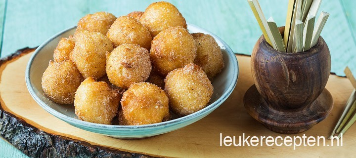

Gehaktbrood
Churros balletjes
Klassieke carpaccio
Churros Balletjes
Deze luchtige Spaanse balletjes met kaneelsuiker zijn een perfecte afsluiter voor een tapasavondje
Ingrediënten
- 125 ml melk
- 125 ml water
- 120 gr roomboter
- 2 eetlepels suiker
- snuf zout
- 250 gr bloem
- 4 eieren
- (zonnebloem)olie om te bakken
- 50 gr suiker
- 1 theelepel kaneel
- eventueel er bij serveren: chocoladesaus
Bereidingswijze
- Doe de melk en het water in een pan en voeg de boter toe en laat smelten. Voeg ook 2 eetlepels suiker en een snufje zout toe. Breng aan de kook en haal daarna de pan van het vuur. Roer de bloem er in een keer door met een garde of houten lepel.
- Zet terug op laag vuur en laat het mengsel nog 3 minuten al roerend garen. Doe het beslag daarna in een beslagkom en laat al langzaam mixend wat afkoelen tot er geen stoom meer vanaf komt. Mix daarna de eieren er een voor een door.
- Laat het deeg 15 tot 30 min rusten terwijl je ondertussen de olie verwarmd op ongeveer 160 graden. Roer ook alvast de suiker en kaneel door elkaar op een bord en zet ook een bord klaar met wat keukenpapier. Neem met 2 lepeltjes wat deeg uit de kom en schep een klein balletje van deeg in het vet. Het balletje moet meteen beginnen te bruisen.
- Doe net al te veel deegballetjes tegelijk in het vet want ze worden nog groter tijdens het frituren. Bak ze in ongeveer 3 tot 5 minuten goudbruin. Laat ze uitlekken op het keukenpapiertje en rol ze daarna als ze nog warm zijn door de kaneelsuiker.
